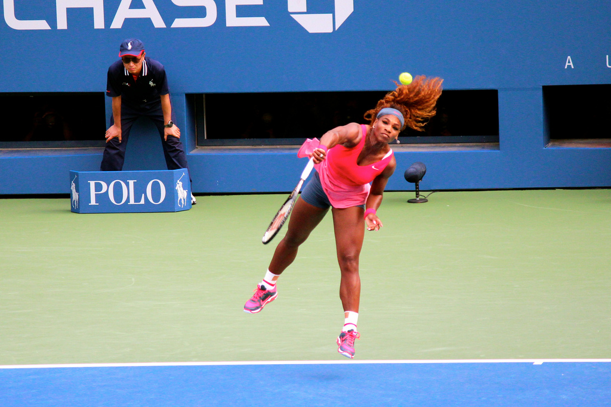

Game, Set, Match: How Serena Williams Dominated the 2015 Australian Open
Serena Williams serves at the 2013 US Open / flickr user Boss Tweed
By Elisabeth Parker, Staff Writer
November 2, 2:40 PM
Serena Williams’s championship win at the Australian Open in 2015 put her in a three-way tie for the most Grand Slam singles championships, and made her the oldest woman to win a singles title in the Open era. At 33 and with 19 titles under her belt, Serena was far from done; she continued to excel for the next two years. Serena won Grand Slam finals, garnered titles like Sports Illustrated’s “Sportsperson of the Year” and won the Australian Open again in 2017, only to announce weeks later that she was pregnant and had been 8 weeks pregnant when she clinched that final Grand Slam win.
Now that Serena and her championship-winning daughter, Alexis Olympia Ohanian Jr., are in what she’s calling a temporary retirement, we’re taking a look back at her 2015 Australian Open run and what set her apart from her opponents. We hope these stats and graphics get you through the heartbreak of a Serena-less draw at the 2018 Australian Open.
Click here for more information about the data used for this story.

Serena Williams celebrates after winning the 2015 Australian Open / Tourism Victoria via Wikimedia Commons
| Round | Opponent | Match length | Sets played | Games played | Games won by Serena | Games won by opponent | Serena serve speed (average, in KPH) | Opponent serve speed (average, in KPH) | Serena aces | Opponent aces | Serena double faults | Opponent double faults |
|---|
| Round | Opponent | Serena serve speed (average, in KPH) | Opponent serve speed (average, in KPH) |
|---|